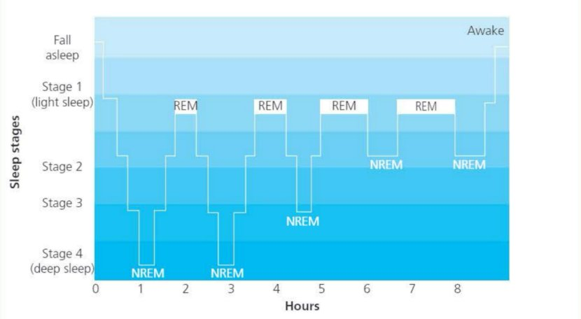
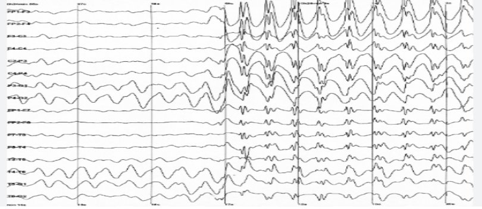

Dement & Kleitman (1957)
The Relation of Eye Movements During Sleep to Dream Activity
睡眠眼动与做梦活动的关系
📋 Table of Contents
§1 Background — Sleep Stages and Brain Waves
The Psychology Being Investigated
Sleep（睡眠） is an altered state of consciousness（意识改变状态）. We are less aware of our surroundings than when awake and move very little. In spite of the risk this would have presented in our evolutionary history, by making us vulnerable, we sleep every day. Our pattern of sleeping and waking on a 24-hour cycle is called a circadian rhythm（昼夜节律/生物钟）; it occurs approximately daily.
Within each 24 hours there are more frequent cycles, called ultradian rhythms（超昼夜节律）. The basic rest–activity cycle (BRAC) occurs approximately every 90 minutes throughout the day and night. During sleep, this rhythm controls the stages of sleep that we experience (see Figure below).

Figure: The cyclical nature of sleep stages through the night, showing four phases of REM sleep and nREM stages (1–4)
🔑 Key Words
sleep（睡眠）: a state of reduced conscious awareness and reduced movement, which occurs on a daily cycle
circadian rhythm（昼夜节律）: a cycle that repeats daily, i.e. approximately every 24 hours, such as the sleep/wake cycle
ultradian rhythm（超昼夜节律）: a cycle that repeats more often than daily, e.g. the occurrence of periods of dreaming every 90 minutes during sleep
electroencephalograph (EEG)（脑电图仪）: a machine used to detect and record electrical activity in nerve and muscle cells when many are active at the same time. It uses macroelectrodes, which are large electrodes stuck to the skin or scalp
How Do We Measure Sleep?
Sleep is difficult to study as the participant is not responsive so cannot communicate their experience. To overcome this problem, a machine called an electroencephalograph (EEG)（脑电图仪） is used. This records changes in brain activity using electrodes stuck to the surface of the participant's head that, because they are recording electrodes, cannot give the participant an electric shock! An EEG produces a chart (an electroencephalogram) showing how electrical activity in the brain or 'brain waves' varies.
The brain waves change in terms of their frequency（频率） (how rapidly they occur) and amplitude（振幅） (height). These two features of the electrical activity change in a patterned way over time. The chart records changes which indicate the sleep stage the participant is in.

Figure 2.2: EEG recordings showing the different stages of sleep — Awake, Stage 1–4, and REM Sleep (with Sleep Spindle marked)
The Five Stages of Sleep
| Stage （阶段） | Characteristics （特征） | Brain Waves （脑波特征） |
|---|---|---|
| Awake（清醒） | Fully alert, eyes open | Beta waves (13–30 Hz), low amplitude, irregular |
| Stage 1（浅睡） | Light sleep, easily awakened, drifting in/out | Theta waves (4–7 Hz), mixed alpha/beta |
| Stage 2（入睡） | Eye movements stop, body temp drops, sleep spindles（睡眠纺锤波） appear | Theta + sleep spindles (12–14 Hz bursts) |
| Stage 3（中睡） | Deep sleep begins, very slow delta waves emerge | Delta waves (0.5–4 Hz), high amplitude |
| Stage 4（深睡） | Deepest sleep, hardest to wake from | Pure delta waves (>50% of record), highest amplitude |
| REM Sleep （快速眼动睡眠） | Eyes move rapidly under lids, vivid dreams, body paralysed | Similar to awake/stage 1 (theta/beta mix), low amplitude |
We enter sleep in stage 1, then work through stages 2, 3 and 4 with our sleep becoming deeper so that we are harder to wake. From here, we re-enter stages 3, then 2 but instead of re-entering stage 1, we go into 'dream' sleep before repeating the cycle several times each night. During the night, the length of time we spend dream sleeping increases and the depth of each cycle reduces. The total length of each cycle therefore stays about the same, i.e., the ultradian rhythm is maintained.
Dreams and Rapid Eye Movement (REM)
Dreams（梦） are vivid, generally visual sequences of imagery that occur at regular intervals during sleep and are associated with rapid eye movements. Like sleep in general, dreams are difficult to study. Although the EEG can detect when we are dreaming, there is no machine that can 'read' our dreams. The sleeper must be woken to give a description of their dream.
It is possible, however, to detect eye movements that occur during sleep. An EOG can be used to detect activity in the muscles moving the eyes, so can be used to measure the frequency and direction of these eye movements. The recording this produces is called an electrooculogram (EOG)（眼电图）. During dream sleep, these eye movements are faster than in any other stage of sleep, hence this is called rapid eye movement or REM sleep（快速眼动睡眠）. The other stages of sleep are referred to as non-rapid eye movement or nREM sleep（非快速眼动睡眠）.
🔑 Key Words
frequency（频率）: the number of events per fixed period of time, e.g. the number of eye movements per minute (approximately 60 per minute in REM sleep) or the number of brain waves (cycles) per second, or Hertz (Hz), e.g. 13–30 Hz for beta waves
amplitude（振幅）: the 'height' of waves, e.g. on an EEG (indicating voltage)
dream（梦）: a vivid, visual sequence of imagery that occurs at regular intervals during sleep and is associated with rapid eye movements
rapid eye movement (REM) sleep（快速眼动睡眠）: a stage of sleep in which our eyes move rapidly under the lids, which is associated with vivid, visual dreams
non-rapid eye movement (nREM) sleep（非快速眼动睡眠）: the stages of sleep (1–4) in which our eyes are still. It is also called quiescent (quiet) sleep. It is not associated with dreaming
eye-movement patterns（眼球运动模式）: the pattern that most people tend to follow when looking at, for example, a menu. This can be helpful in designing menus
Previous Research: Aserinsky & Kleitman (1955)
Aserinsky and Kleitman (1955) began the objective, physiological measurement of sleep using an EEG to explore the relationship between sleep and dreaming. They showed that participants woken from REM sleep were more likely to report a vivid, visual dream than when woken in other stages. They also found a characteristic brain wave pattern during REM sleep, called alpha waves（α波）, which is similar to brain activity when we are awake.
- Must Know Sleep is an altered state of consciousness with circadian (24-hour) and ultradian (~90-minute) rhythms.
- Must Know Aserinsky & Kleitman (1953/1955) first identified REM sleep by observing rapid eye movements during sleep.
- Common The 1957 study aimed to establish whether eye movements correlate with dreaming.
- Context EEG measures brain waves; EOG measures eye movements during sleep.
核心逻辑：1953年发现REM现象 → 提出科学问题：眼动是否与做梦有关？→ 这是首次将"梦"从主观体验转化为可测量客观指标的研究。
记忆口诀："REM发现于53，D&K验证于57"
考试技巧：如果题目问背景，一定要提到Aserinsky & Kleitman (1953)的先驱性发现。
§2 Aim — Three Research Questions
The aim of this study was to find out more about dreaming, specifically to answer three questions:
🎯 Three Research Questions
- Does dream recall differ between REM and nREM stages of sleep?
Are participants more likely to recall a dream if woken from REM than from nREM? - Is there a positive correlation between subjective estimates of dream duration and the length of the REM period before waking?
Can participants accurately judge how long they've been dreaming? - Are eye-movement patterns related to dream content?
Does the direction of eye movements match what participants see in their dreams?
In addition to the changes in brain waves and reduction in body muscle activity that Aserinsky and Kleitman linked to dream sleep, they identified increases in breathing and heart rates during REM sleep. Together, these led them to suggest that this pattern of changes represented a particular level of activity in the brain. Aserinsky and Kleitman suggested that rapid eye movements were likely to be associated with the experience of dreaming, and specifically that the strikingly vivid visual reports of dreams that some participants reported when woken from REM sleep indicated that the eye movements were likely to be associated with the visual imagery of dreams.
However, they also recognised that this would be difficult to test. The study by Dement and Kleitman aimed to explore this exact problem.
- Must Know Main aim: Investigate the link between eye movements during sleep and dream activity.
- Must Know Question 1: Does dream recall differ between REM and nREM?
- Must Know Question 2: Can participants accurately estimate dream duration?
- Must Know Question 3: Are eye-movement patterns related to dream content?
- AO2 The three questions represent a progression: existence → duration → content correspondence.
核心逻辑：研究分三个子问题，层层递进：
① 有无差异 = 是否在做梦？（存在性问题）
② 时间估计准不准？（主观判断能力）
③ 眼动方式 = 梦的内容？（对应关系问题）
记忆口诀："一问有无、二问时间、三问内容"
考试技巧：三个问题要能分别复述，考试可能只问其中一个。
§3 Method — Laboratory Experiment
Research Method and Design
This study was conducted in a laboratory experiment（实验室实验） but several methods were used:
- To answer Question 1 (difference in dream recall between REM and nREM): an experiment with a repeated measures design（重复测量设计） was used. The independent variable was whether the participant was woken from REM or nREM sleep. The dependent variable was whether they recalled a dream or not.
- To answer Question 2 (relationship between dream duration and REM period length): a correlation（相关研究）. A further comparison of participants' estimates of whether they had been dreaming for 5 or 15 minutes was another repeated measures design experiment.
- To answer Question 3 (eye-movement patterns and dream content): self-reports were compared to the direction of eye movements observed.
Figure 2.4: A participant sleeps in a lab bed with EEG electrodes attached beside the eyes and on the scalp, wires gathered into a single cord from the head
Sample
Seven male and two female adults took part in the study. Of these, five participants were studied in detail. Results from the remaining four participants were used to confirm the results of the first five.
| Characteristic | Details |
|---|---|
| Total number | 9 adults (7 male, 2 female) |
| Studied in detail | 5 participants (DN, IR, KC, WD, PM) |
| Confirmation group | 4 additional participants |
| Age range | Adults (exact ages not specified in the textbook) |
| Sampling method | Not specified in the textbook; because the participants volunteered for a study on dreaming, this is likely self-selecting/volunteer sampling |
🔬 Research Methods
Measures of frequency and amplitude produce quantitative data（频率和振幅测量产生定量数据）. Data such as this tends to be highly reliable, as the machines used to produce it, such as the EEG, do not vary in the way that they measure the variables. In general, would you expect qualitative data to be more or less reliable? Why?
- Must Know Design: Laboratory experiment with repeated measures (within-subjects).
- Must Know Sample: N=9 (7M, 2F), 5 studied in detail, opportunity sampling.
- Must Know IV Question 1: Type of awakening (REM vs. nREM).
- Must Know DV Question 1: Dream recall (yes/no).
- Common Equipment: EEG (brain waves), EOG (eye movements).
- AO2 Opportunity sampling limitation: Small, biased sample — limits generalisability.
核心逻辑：实验室环境 + 被内设计（每个被试既是实验组又是对照组）+ 生理仪器客观测量（EEG/EOG）= 高内部效度但样本小、生态效度低。
记忆口诀："九人机会抽样、五人详细研究、脑电眼电两仪器"
考试技巧：操作化定义是重点！要能说出如何用EOG判断REM、如何用量表评估梦境回忆。
§4 Procedure — Three Experimental Conditions
On each day of the study a participant ate normally, excluding caffeine-containing drinks (such as coffee) and alcohol. The participant arrived at the laboratory just before their normal bedtime. The participant wanted to sleep in a dark, quiet room with electrodes attached beside the eyes and on the scalp (the EEG), which fed into the experimenter's room. The wires were gathered together into a single cord from the participant's head (like a pony-tail) so they could move easily in bed.
Participants were woken (by a doorbell) at various times during the night, asked to describe their dream if they were having one, then returned to sleep. They were not told about their EEG pattern or whether their eyes were moving.
Question 1: Does dream recall differ between REM and nREM?
Participants were woken either from REM or nREM sleep but were not told which. The choice of REM or nREM wakings was decided in different ways for different participants:
- using a random number table (participants PM and KC)
- in groups of three REM then three nREM (participant DN)
- by telling the participant that they would only be woken in REM but actually waking them in REM or nREM randomly (participant WD)
- in no specific order, the experimenter just chose (participant IR)
Immediately after being woken, the participant stated whether they were having a dream or not and then, if appropriate, described the content of the dream into a recorder. When the participant had finished, the experimenter occasionally entered the room to ask further questions about the dream (they were given a brief interview（简短访谈）). There was no other communication between the experimenter and the participant.
Question 2: Is there a correlation between dream duration and REM period length?
Initially, participants were woken after a variety of REM durations and asked to estimate the time they had been dreaming. Although roughly accurate, this was too difficult for participants. Subsequently, they were woken after either 5 or 15 minutes in REM sleep. The participant guessed which duration they had been dreaming for. Longer REM periods were also used. The number of words in the dream narrative after each duration, if given, was counted.
Question 3: Are eye-movement patterns related to dream content?
The direction of eye movements was detected using EEG electrodes around the eyes. Participants were woken after a single eye-movement pattern had lasted for more than 1 minute and asked to report their dream. The eye-movement patterns detected were:
- 'mainly vertical'（主要为垂直运动）
- 'mainly horizontal'（主要为水平运动）
- 'both vertical and horizontal'（垂直+水平混合）
- 'very little or no movement'（极少或无运动）
Comparison EEG records were taken from awake participants, 20 naive ones and five of the experimental sample, who were asked to watch distant and close-up activity.
- The environment was highly controlled — the doorbell used to wake participants was sufficiently loud to rouse them immediately from any sleep stage
- If the experimenter asked any questions, this was not done until the participant had definitely completed their recording
- Reports were not counted as 'dreams' if the participant could only recall having dreamed, rather than any specific content, or had only a vague, fragmented impression of the dream
- Participants were not told about their EEG pattern or whether their eyes were moving
- Must Know No caffeine/alcohol before lab arrival.
- Must Know Woken by doorbell, asked to report dream immediately.
- Must Know Different waking schedules for different participants (random, grouped, deceived, etc.).
- Common Question 2 changed from free estimation to forced choice (5 or 15 min).
- Context Control group: awake participants watching distant/close-up activity.
核心流程：禁咖啡酒精 → 实验室佩戴电极 → 按标准唤醒 → 即时报告梦境 → 记录逐字稿 → 返回睡眠。
关键细节：唤醒问题是开放式的（不暗示"做梦"），避免demand characteristics。Q2的方法中途改进体现了研究的严谨性。
考试技巧：能画出流程图：电极佩戴 → 监测室观察 → 满足条件即唤醒 → 即时访谈 → 继续睡眠。
§5 Results
General Findings
Dement and Kleitman reported some general findings, such as that all participants dreamed every night, as well as those relating to their three questions. They found that uninterrupted dream stages:
- lasted 3–50 minutes (with a mean of approximately 20 minutes)
- were typically longer later in the night
- showed intermittent bursts of around 2–100 rapid eye movements
In addition, they observed that:
- no rapid eye movements were seen during the onset of sleep even though the EEG passed through a stage of brain waves similar to those produced during REM sleep
- the cycle length (from one REM stage to the next) varied between participants from 70 to 104 minutes (with a mean of 92 minutes for all participants), but was consistent within individuals
- when woken from nREM sleep participants returned to nREM but when woken from REM sleep they typically did not dream again until the next REM phase (except sometimes in the final REM phase of the night). As a consequence, the pattern of REM and nREM periods was very similar in experimental participants whose sleep was disturbed to those who had an uninterrupted night's sleep
Question 1: Does dream recall differ between REM and nREM?
Participants frequently described dreams when woken from REM but rarely did when woken from nREM sleep although there were some individual differences (see Table below). Participants were able to recall a dream from 152 of 191 awakenings from REM (79.6%) whereas for 93.1% (149/160) of awakenings from nREM they did not recall a dream. This difference was most noticeable at the end of the nREM period.
In 17 nREM awakenings soon after the end of a REM stage (within 8 minutes), five dreams were recalled (29% of occasions). However, from 132 awakenings following periods longer than 8 minutes after a REM stage, only six dreams were recalled (less than 5% of occasions). In nREM awakenings, participants tended to describe feelings but not specific dream content. These were least likely to remember a dream if they were woken at the stage of sleep in which the EEG has 'spindles' (i.e. stage 2). They tended to be bewildered and report feelings such as anxiety, pleasantness or detachment.
Table: Dream Recall Following Awakenings from REM or nREM Sleep
| Participant （参与者） |
Rapid eye movements （快速眼动 / REM） |
No rapid eye movements （非快速眼动 / nREM） |
||
|---|---|---|---|---|
| Dream recall （回忆起梦） |
No recall （未回忆） |
Dream recall （回忆起梦） |
No recall （未回忆） |
|
| DN | 17 | 9 | 3 | 21 |
| IR | 26 | 8 | 2 | 29 |
| KC | 36 | 4 | 3 | 31 |
| WD | 37 | 5 | 1 | 34 |
| PM | 24 | 6 | 2 | 23 |
| KK | 4 | 1 | 0 | 5 |
| SM | 2 | 2 | 0 | 2 |
| DM | 2 | 1 | 0 | 1 |
| MG | 4 | 3 | 0 | 3 |
| Totals（总计） | 152 | 39 | 11 | 149 |
Table 2.1: Dream recall following awakenings from REM or nREM sleep
Question 2: Correlation Between Dream Duration and REM Period Length
Awakenings from REM sleep did not always produce dream recall; absence of dreaming in REM was more common early in the night. Of 39 REM awakenings when dreams were not reported, 19 occurred in the first 2 hours of sleep, 11 from the second 2 hours, 5 from the third 2 hours and 4 from the last 2 hours. In contrast, awakenings from nREM always produced a low incidence of dream recall.
Narratives from dreams recalled after 30~50 minutes of REM were not much longer than those after 15 minutes even though the participants felt they had been dreaming for a long time. This is probably because they could not remember all the details from very long dreams.
The results of two tests help to answer this question. Firstly, the experimenters needed to determine whether participants' subjective experience of dream duration matched the measured REM duration. Second, the correlation between the measured REM duration and the estimate of duration based on the participants' dream narrative length. When participants were offered a choice of estimating that they had been dreaming for 5 or 15 minutes, the accuracy of estimation was very high (88% and 78% respectively).
Table: Results of Dream Duration Estimation After 5 or 15 Minutes of REM Sleep
| Participant （参与者） |
5 minutes（5分钟组） | 15 minutes（15分钟组） | ||
|---|---|---|---|---|
| correct（正确） | incorrect（错误） | correct（正确） | incorrect（错误） | |
| DN | 8 | 2 | 5 | 5 |
| IR | 11 | 1 | 7 | 3 |
| KC | 7 | 0 | 12 | 1 |
| WD | 13 | 1 | 15 | 1 |
| MP | 6 | 2 | 8 | 3 |
| Total（总计） | 45 | 6 | 47 | 13 |
Table 2.2: Results of the comparison of dream duration estimates after 5 or 15 minutes of REM sleep
The r values for the correlation of duration of REM period (in minutes) and number of words in the dream narrative for each participant varied from r = 0.4 to r = 0.71; all were significant positive correlations.
🔬 Research Methods
The mean sleep cycle length was calculated for each individual. This would have been worked out by adding together the cycle lengths in minutes for every complete cycle a participant had slept through. This would then have been divided by the number of complete sleep cycles that had been observed for that participant.
Can you work out how variable the average cycle length was?
Question 3: Are Eye-Movement Patterns Related to Dream Content?
Eye-movement patterns were found to be related to dream content. This part of the study was based on 35 awakenings from nine participants. Periods of only vertical or only horizontal movements were very rare. There were three dreams with mainly vertical eye movements. In one dream, the participant was standing at the bottom of a tall cliff operating a hoist (a lifting machine) and looking up at climbers at various levels then down at the machine. In another dream, a man was climbing up a series of ladders looking up and down as he climbed. In the third dream, the participant was throwing basketballs at a net, shooting, looking up at the net, and then looking down to pick up another ball from the floor. There was one instance of a dream with horizontal movement, in which the dreamer was watching two people throwing tomatoes at each other.
Ten dreams had little or no eye movement and the dreamer reported watching something in the distance or staring at an object. Two of these awakenings also had several large eye movements to the left just a second or two before the awakening. In one, the participant had been driving a car and staring at the road ahead. He approached a road junction and was startled by a speeding car suddenly appearing on his left (as the bell rang). The other dreamer also reported driving a car and staring at the road ahead. Immediately before being woken, he saw a man standing to the left of the road and acknowledged him as he drove by.
Twenty-one of the awakenings had mixed eye movements. These participants reported looking at objects or people close to them, for example talking to a group of people, looking for something and fighting with someone. There was no recall of distant or vertical activity in these cases.
The eye-movement patterns recorded from the awake (control) participants were similar in amplitude and pattern to those occurring in dreams. Similarly, there was virtually no eye movement when watching distant activity, and much more when watching close-up activity. Vertical eye movements were rare in awake participants, except during blinking, and when the experimenter threw a ball in the air.
- Must Know REM dream recall: 79.6% (152/191) — the headline figure!
- Must Know nREM dream recall: ~7% (11/160)
- Must Know Duration estimation accuracy: 88% (5min), 78% (15min)
- Must Know Eye-movement patterns matched dream visual content (vertical ↔ up/down, minimal ↔ distant viewing).
- Common Correlation r = 0.4 to 0.71 between REM duration and word count.
- Context Dreams within 8 min of REM end may actually be from previous REM period.
核心数据：REM唤醒80%有梦 vs 非REM仅7% → 差距约11倍！这是整个研究的基石发现。
三个问题的答案：①有显著差异 ②能较准确估计时长(r=0.4~0.71) ③眼动方向与梦境视觉内容对应
记忆口诀："REM八成梦、非REM一成、时长估得准、眼动对内容"
考试技巧：如果只能记住一个数字，就记79.6%（或约80%）。这是最常考的数据点。
§6 Conclusion
The results indicate that dreaming is experienced in REM but not nREM sleep, participants can judge the length of their dream duration and REM patterns relate to dream content. Dreaming is more likely at the end of the night, as the REM stages are longer. These latter two observations fit with those reported by other researchers.
The occasional recall of dreams from nREM is likely to happen because dreams are being remembered from the previous REM phase, and this is more likely closely following REM sleep. The finding that REM sleep occurs in phases during the night helps to explain why participants in other studies who were awoken randomly may not have reported dreaming. They may have been woken in nREM stages, or were dreaming about distant objects so had few REMs, making accurate detection difficult.
Measurements using the EEG to record eye movements and brain waves show that differing stages of brain activity and the presence or absence of dreams provides objective evidence supporting the idea that dreams progress in 'real time'. This provides a more valid way to study dreaming than using dream recall alone, which is subjective and can be affected by forgetting.
Core conclusion: Dement and Kleitman demonstrated that (1) dreaming is strongly associated with REM sleep, (2) participants can reasonably estimate dream duration, and (3) eye-movement patterns during sleep correspond to visual dream content — particularly vertical movements for "looking up/down" dreams and minimal movements for "watching distantly" dreams.
- Must Know REM = Dreaming (the fundamental equation of this study).
- Must Know Participants can accurately estimate dream duration.
- Must Know Eye-movement patterns correspond to dream visual content.
- AO2 Dreams progress in "real time" — objective measurement validates subjective experience.
一句话结论："眼动=做梦"——REM期的快速眼动是梦活动的可靠生理标志，且梦境按实时推进。
三个结论对应三个研究问题：Q1→存在性(Q2→准确性)、Q3→机制对应性 + 总体方法论贡献（客观测量替代主观回忆）。
考试技巧：Essay题用one-sentence summary作为thesis statement非常加分。
§7 Evaluation
Strengths
The laboratory setting allowed Dement and Kleitman to control many extraneous variables. Participants avoided caffeine and alcohol, slept in a dark, quiet room, and were woken by a loud doorbell so they were roused instantly from any sleep stage. This reduced the problem that participants in deeper stages might forget more of a dream before reporting it. In addition, participants were not told about their EEG pattern or whether their eyes were moving, and one participant (WD) was even given false information about when he would be woken. These controls helped to eliminate demand characteristics — if participants had expected more detailed dreams in REM, they might have tried harder to produce them.
A dream was operationalised as a recollection that included content, not merely the impression of having dreamed. Reports were not counted as dreams if they were vague, fragmented, or lacked specific content. This clear definition helped to raise validity, because the researchers could be more confident that the material they recorded was actually dream content rather than guesswork.
The study collected quantitative data from the EEG (brain-wave frequency and amplitude), the EOG (direction and amount of eye movement), and the length of each REM period. These physiological measures are objective because they do not depend on the researcher's interpretation. At the same time, the study gathered qualitative data from the dream narratives, which helped explain why particular eye-movement patterns occurred. The combination of objective physiology and subjective report gave a richer picture than either type alone.
The procedure was highly standardised: electrodes were placed in consistent positions, each participant followed the same preparation routine, and the same recording equipment was used throughout. Because the EEG measures are biological and mechanical, they are unaffected by the experimenter's personal view, which increases reliability. The detailed method means another researcher could replicate the study to check whether the same pattern of REM–dream recall is found again.
Weaknesses
The sample contained only 9 adults (7 male, 2 female), with just 5 studied in detail. Although both genders were included, the tiny sample limits how far the findings can be generalised. Moreover, the participants were volunteers who chose to take part in a study on dreaming; they may have differed from the general population by dreaming more often, remembering dreams better, or having more visual dreams. This self-selection bias means the sample may not be representative.
Question 2 used a correlation between the measured length of the REM period and the number of words in the dream narrative. The study found significant positive correlations, ranging from r = 0.4 to r = 0.71. However, a correlation can only show that two variables are linked; it cannot prove that longer REM periods cause longer dream reports. A third variable, such as how vivid or memorable a dream was, could influence both measures.
Several features of the procedure reduced ecological validity. Participants were asked to abstain from coffee and alcohol, so their sleep may not have been typical. They also slept in a laboratory, attached to electrodes and wires, while being observed and repeatedly woken. This artificial situation is quite different from sleeping in their own bed, so the dreams and sleep patterns recorded may not fully reflect natural behaviour.
Participant WD was deceived: he was told he would only be woken from REM sleep, but he was actually woken from REM and nREM randomly. Deception is an ethical issue because it can cause distress and means participants cannot give fully informed consent. The researchers could argue that the aim could not be achieved without deception, since they needed to test whether expectation of being woken in REM would affect dream reports. Even so, the use of deception remains a weakness when judged against modern ethical guidelines.
- Must Know [Control of Variables] Strength: lab control, loud doorbell instant waking, withholding EEG/eye-movement information, deception of WD to reduce demand characteristics
- Must Know [Validity] Strength: clear operational definition of a dream (content required, vague reports excluded)
- Common [Types of Data] Strength: objective quantitative EEG/EOG data combined with qualitative dream narratives
- Common [Reliability] Strength: standardised electrode placement and procedure; replicable physiological measures
- Must Know [Sampling] Weakness: only 9 participants (5 studied in detail); volunteer/self-selected sample limits generalisability
- Must Know [Validity] Weakness: correlation between REM duration and word count does not prove causation
- Common [Validity] Weakness: low ecological validity — lab, electrodes, observation, abstinence from caffeine/alcohol
- Common [Ethics] Weakness: deception of WD about waking condition affects informed consent
§8 Ethical Issues
⚠️ Main Ethical Issue: Deception（欺骗）
One aspect of the method that raised an ethical issue was the deception of participant WD who was misled about the stage of sleep he was being woken in. Researchers should avoid using deception as it can cause distress and means they cannot give their informed consent. However, in some cases the aim cannot be achieved without doing so and, in this case, it provided a way to test whether expectation of being woken in REM (at least sometimes) would affect a participant's dream reports.
Other ethical considerations:
- Informed consent（知情同意）: Participants agreed to sleep in a lab with electrodes attached, but could not be fully informed about the true purpose without compromising the study
- Right to withdraw（退出权）: Technically possible but practically difficult once wired up and asleep
- Protection from harm（保护免受伤害）: Repeated wakening during sleep may cause fatigue and minor distress, but no lasting harm was reported
- Debriefing（事后解释）: Not mentioned in the textbook; good ethical practice would require participants to be fully debriefed after the study
- Must Know Main issue: deception of participant WD (misled about waking condition).
- Must Know Sleep deprivation/fatigue from repeated awakenings (protection from harm).
- Common Right to withdraw practically difficult once asleep and wired up.
- AO2 Contextualise: ethical standards were less strict in 1957 — don't judge too harshly by today's standards.
核心伦理问题：欺骗WD参与者（误导唤醒类型）、反复夜间唤醒导致疲劳（保护免受伤害）、退出权实际难以行使。
得分要点：一定要加contextualisation——"1957年伦理标准不如今天严格"。这显示你的evaluative maturity（评价成熟度）。
§9 Summary
Dement and Kleitman's study explored the relationship between eye movements during sleep and dream recall. An EEG provided information about participants' sleep stages, such as REM sleep, and about eye movements. Dream recall was measured by self-report. The correlational results showed that estimates of dream duration based on the number of words in the dream narrative correlated positively with REM duration. Results from the laboratory experiments showed that dreams occurred in REM rather than nREM sleep and confirmed that participants had a sense of the duration of a dream as they could accurately estimate whether they had been dreaming for 5 or 15 minutes. Furthermore, the contents of the dream narratives related to EOG records of the direction and amount of eye movements during dream sleep showing that this is related to dream content, e.g. that vertical movements of the eyes occur when there are vertical events in a dream. Many variables, such as food and drink that could affect sleep, were controlled and demand characteristics were reduced where possible. However, the laboratory, and equipment, meant that the situation was unusual for sleeping. Nevertheless, objective, quantitative data was obtained from the EEG, eye movements and timing, allowing for valid and reliable comparisons to be made.
📋 Quick Recap
| Item（项目） | Content（内容） |
|---|---|
| Researchers | Dement, W., & Kleitman, N. (1957) |
| Journal | Journal of Experimental Psychology, 53, 339–346 |
| Method（方法） | Laboratory experiment + Correlation + Self-report |
| Sample（样本） | 9 adults (7M, 2F); 5 studied in detail |
| Main result 1（主要结果1） | REM: 79.6% dream recall vs nREM: ~93% no recall |
| Main result 2（主要结果2） | Duration estimation: 88% correct (5min), 78% correct (15min) |
| Main result 3（主要结果3） | Eye-movement patterns matched dream visual content |
| Approach（取向定位） | CIE Biological Approach — Sleep and Dreaming |
§10 Exam Practice Questions
Key points: Mainly vertical eye movements（主要为垂直眼动） were observed. Reason: the dreamer was repeatedly looking UP (at climbers above him on the cliff/ladder) and DOWN (at the machine/his feet). This supports the conclusion that eye-movement patterns during REM sleep correspond to the visual content of the dream — the eyes physically move in the same direction as the gaze in the dream narrative. [4 marks]
Key points: According to the study's findings, dreams with little or no eye movement involved the dreamer watching something in the distance or staring at an object (e.g., driving a car and staring at the road ahead). Minimal eye movements suggest static visual scenes without much scanning or tracking of objects. This contrasts sharply with vertical-movement dreams (climbing, throwing) or mixed-movement dreams (close-up social interactions). [4 marks]
Key points: Initially, participants were asked to freely estimate dream duration after varying REM periods. This proved "too difficult for participants" — unstructured time estimation while drowsy is inherently unreliable. They changed to a forced-choice method: participants simply guessed whether they'd dreamed for 5 or 15 minutes. This increased control dramatically (accuracy rose to 88%/78%), reducing participant variables like individual differences in time perception ability, thereby improving the validity of the correlation analysis. [6 marks]
Model Answer:
Dement and Kleitman (1957) conducted a laboratory experiment with 9 participants (7M, 2F) to investigate whether eye movements during sleep relate to dreaming. Participants slept in a lab with EEG and EOG electrodes attached to monitor brain waves and eye movements.
In Question 1, participants were randomly awakened during both REM and nREM periods. Results showed that awakenings during REM produced dream reports in 79.6% of cases (152/191), compared to only ~7% for nREM awakenings (11/160).
In Question 2, participants could accurately estimate whether they had dreamed for 5 or 15 minutes (88% and 78% correct respectively). The correlation between REM duration and narrative length was r = 0.4 to 0.71.
In Question 3, the pattern of eye movements (vertical vs. horizontal) was found to correspond to the visual content of reported dreams.
The researchers concluded that rapid eye movements during sleep are a reliable indicator of dream activity. [6 marks]
Model Answer:
Strengths:
- [Control of Variables] A strength is the high level of experimental control. The study was conducted in a laboratory, so extraneous variables such as noise and light were controlled: participants slept in a dark, quiet room and avoided caffeine and alcohol. They were woken by a loud doorbell so that they were roused instantly from any sleep stage, reducing the chance that deeper-stage participants would forget more of the dream before reporting it. In addition, participants were not told whether their eyes were moving or what their EEG pattern showed, and participant WD was deliberately misled about the stage from which he would be woken. These controls reduced demand characteristics, because participants could not adjust their reports to match what they believed the researchers wanted to hear. [3]
- [Types of Data / Validity] Another strength is the use of objective quantitative data together with a clear operational definition of a dream. The EEG provided measures of brain-wave frequency and amplitude, while the EOG recorded eye-movement direction and amount; these are objective because they do not depend on the researcher's interpretation. A dream was only counted as a dream if the participant reported specific content, and vague or fragmented impressions were excluded. This operational definition raises validity, because it made it more likely that the researchers were recording genuine dream experiences rather than guesses. [3]
- [Reliability & Replicability] The procedure was standardised, which increases reliability. Electrodes were placed in consistent positions on the scalp and beside the eyes, each participant followed the same preparation routine, and the same recording equipment was used. Because the EEG and EOG are mechanical, biological measures, they are unaffected by the experimenter's personal views, so the measurements are unlikely to vary because of researcher bias. The detailed method means the study could be replicated to check whether the same REM–dream recall pattern is found again. [2]
Weaknesses:
- [Sampling] A weakness is the small, self-selected sample. There were only 9 adults in total (7 male, 2 female), and only 5 were studied in detail, with the remaining 4 used simply to confirm the first five results. Because participants volunteered for a study on dreaming, they may already have differed from the general population: they may have dreamed more often, remembered their dreams better, or had more visual dreams. This self-selection bias limits how far the findings can be generalised beyond this small group. [2]
- [Validity] Another weakness concerns validity. First, Question 2 used a correlation, and although significant positive correlations were found between REM duration and the number of words in the dream narrative (r = 0.4 to 0.71), correlation does not prove causation. A third variable, such as how vivid or memorable the dream was, might have influenced both the length of the REM period and the length of the narrative. Second, the study had low ecological validity: participants slept in a laboratory attached to electrodes and wires, were observed, and were repeatedly woken during the night. They were also asked to avoid coffee and alcohol. This artificial setting may have produced sleep and dream patterns that were not typical of their normal sleep at home. [3]
- [Ethics] A final weakness is ethical. Participant WD was deceived: he was told he would only be woken from REM sleep, but he was actually woken from both REM and nREM randomly. Deception is problematic because it prevents fully informed consent and could cause distress when the participant later discovers the truth. Dement and Kleitman might argue that the aim could not be achieved without this deception, because they needed to test whether expectation of being woken in REM would affect dream reports. Even so, by modern ethical standards the use of deception counts as a weakness. [2]
Overall conclusion: Dement and Kleitman's study provided strong, objective evidence that dreaming is linked to REM sleep, that participants can estimate dream duration, and that eye movements correspond to dream visual content. Its main strengths are its careful control of extraneous variables and its use of objective physiological measures; its main weaknesses are the small, self-selected sample and the artificial laboratory setting. [Total: 15]